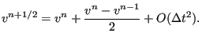
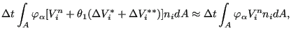
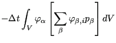
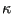
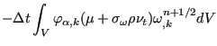
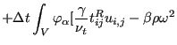
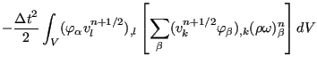
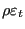
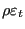
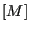

Next: Shallow water calculations Up: Types of analysis Previous: Turbulent Flow in Open Contents
The solution of the three-dimensional Navier-Stokes equations has been implemented following the Characteristic Based Split (CBS) Method of Zienkiewicz and co-workers [99],[96].The present implementation does include laminar and turbulent calculations for compressible and incompressible fluids. The calculations are transient, however, they are pursued up to steady state or up to the number of iterations specified by the user.
The input deck format for CFD-calculations is very similar to structural calculations. Noticable differences are:
For incompressible flows the following additional comments are due:
For compressible flows the following additional information is needed:
Fluid problems are of a quite different nature than structural problems. What we particularly noticed in fluid problems is that
The basic idea of the CBS method is to formulate the governing equation in a
coordinate system moving with the characteristics of the flow, leading to a
disappearance of the convective first order terms. To illustrate this, we
start from a one-dimensional equation in the non-conservative form (the
velocity  is
brought outside the partial differentiation)
is
brought outside the partial differentiation)
| (421) |
exhibiting a transient, convective, diffusive and source term ( is some
dependent quantity such as temperature). Applying a
change of variables from x to x':
is some
dependent quantity such as temperature). Applying a
change of variables from x to x':
| (422) |
where moves with the fluid, this equation is transformed into:
 |
(423) |
i.e. the convective term disappears.
Applying Finite Differences along the characteristic from time  (superindex
n) to time
(superindex n+1) leads to (Figure 138):
(superindex
n) to time
(superindex n+1) leads to (Figure 138):
where  takes a value between 0 and 1. Now, by applying a Taylor series
expansion the values at can be written as a function of values at
takes a value between 0 and 1. Now, by applying a Taylor series
expansion the values at can be written as a function of values at
 :
:
| (425) |
| (426) |
and
| (427) |
Therefore, Equation (424) now yields (from now on the subindex  is dropped to simplify the notation):
is dropped to simplify the notation):
Now, , where can be approximated by:
| (429) |
Since
| (430) |
one obtains:
| (431) |
where
| (432) |
was defined. Consequently:
| (433) |
Substituting this in Equation (428) and setting leads to:
Since
| (435) |
in the first line of Equation (434) can be replaced by
without loss of accuracy. Therefore, the terms quadratic in  in the first two lines can be merged into:
in the first two lines can be merged into:
| (436) |
and one now obtains:
In the last equation can be replaced by an extrapolation of  at
time
based on its values in iteration and
at
time
based on its values in iteration and  without loss of
accuracy. Indeed, combining
without loss of
accuracy. Indeed, combining
( ) and
| (439) |
( ) or, equivalently,
| (440) |
one obtains
 |
(441) |
or for :
|  | (442) |
In the same way the diffusive and source terms at time are evaluated based on a similar extrapolation of the velocity and temperature (for the momentum and energy equation, respectively).
Generalizing Equation (437) to three dimensions and writing the
equation in conservative form (i.e. replacing
by
 ) finally yields:
) finally yields:
| (443) |
The last three terms can be viewed as stabilization terms. Usually, only terms up to the second order derivative are taken into account. Therefore, the stabilization term for the diffusion is usually neglected.
The corresponding weak formulation is obtained by multiplying the above equation with the shape function for a concrete node and integrating over the volume. Therefore, the CBS Method transforms a transport equation of the form
| (444) |
where C stands for the convective term, D for the diffusion term and F for the source term, into
| (445) |
Notice that the integral over the total volume in reality is a sum of the integrals over each element. For each element the local shape functions are used in expressions such as .
The first, second and third term on the right hand side correspond to convection, diffusion and external forces, respectively. The fourth and sixth terms are the stabilization terms for convection and external forces, while the fifth term is the area term corresponding to diffusion. It is the result of partial integration. The stabilization terms were obtained through partial integration too. In agreement with the CBS Method the corresponding area terms are neglected. Furthermore, third-order and higher order terms are neglected as well (particularly the stabilization terms corresponding to diffusion).
This method is now applied to the transport equations for mass, momentum and
energy. Furthermore, the resulting momentum equation is split into two parts
(Split scheme A in [99]), one part of which is calculated at
the beginning of the iteration scheme. Subsequently, the conservation of mass equation
is solved, followed by the second part of the momentum equation. To this end
the correction to the momentum
in direction  is written as a sum of two corrections:
is written as a sum of two corrections:
| (446) |
This results in the following steps:
Step 1: Conservation of Momentum (first part)
The partial differential equation reads:
Applying the CBS method to all terms except the pressure term leads to:
is the momentum,  is the diffusive stress and is the Reynolds stress
multiplied by
is the diffusive stress and is the Reynolds stress
multiplied by  (only for turbulent flow), all evaluated at time t. is the gravity acceleration at
time
. The diffusive stress
satisfies
(only for turbulent flow), all evaluated at time t. is the gravity acceleration at
time
. The diffusive stress
satisfies
| (449) |
whereas is defined by
| (450) |
Here, is the turbulent viscosity and  is the turbulent kinetic
energy. What is lacking in equation (448) to be equivalent to the
momentum transport equation is the pressure term.
is the turbulent kinetic
energy. What is lacking in equation (448) to be equivalent to the
momentum transport equation is the pressure term.
Step 2: Conservation of mass
The partial differential equation reads:
This can be approximated by:
where is a parameter leading to an explicit scheme for and an implicit scheme for . Now, for one can use the gradient of the pressure in the momentum equation (this term can be treated in a way similar to a source term):
Before substituting Equation (453) into Equation (452) the
stabilization term is dropped (leads to a third order derivative) and the
pressure gradient at is changed into a gradient in between  and
by use of a parameter ( is equivalent to
and
by use of a parameter ( is equivalent to  in Equation(428):
in Equation(428):
| (454) |
For one obtains an explicit scheme (used for compressible media), for an implicit scheme (used for incompressible media). Now one obtains for Equation (452):
| (455) |
Applying Galerkin and partial integration to all terms on the right, this leads to:
In agreement with [96] the following approximation was made:
|  | (457) |
leading to the last term in equation (456). The velocity in the mass conservation equation is calculated at time , whereas the pressure in the momentum transport equation is expressed at time ( ). If the scheme is called explicit, else it is semi-implicit (in the latter case it is not fully implicit, since the diffusion term in the momentum equation is still expressed at time t). For compressible fluids (gas) an explicit scheme is taken. This means that the second term on the left hand side of equation (456) disappears and the only unknowns are . For incompressible fluids the density is constant and consequently the first term is zero: the unknowns are now the pressure terms .
An additional difference between compressible and incompressible fluids is that the left hand side of equation (456) for incompressible fluids (liquids) is usually not lumped: a regular sparse linear equation solver is used. For compressible fluids it is lumped, leading to a diagonal matrix. Lumping is also applied to all other equations (momentum,energy..), irrespective whether the fluid is a liquid or not.
Step 3: Conservation of Momentum (second part)
This equation takes care of the pressure term in the momentum equation, which was not covered by step 1. Now, the terms are evaluated at :
| (458) |
In weak form this leads to (applying partial integration to the stabilization term):
|  | ||
| (459) |
Notice that for compressible fluids the second term on the right
hand side disappears (
). Consequently,  is not needed
for gases. This is good news, since only
is known at this point
(conservation of mass).
is not needed
for gases. This is good news, since only
is known at this point
(conservation of mass).
Step 4: Conservation of Energy
The governing differential equation runs:
| (460) |
where
is the total internal energy per unit of volume,  is the conduction coefficient, are the external forces
and
 represents volumetric heat sources.
satisfies
represents volumetric heat sources.
satisfies
| (461) |
The energy equation in the above form can be directly obtained from Equation (28). Indeed, the right hand side in both equations is identical. The left hand side of Equation (28) can be written as:
| (462) |
in which the conservation of mass was used in the form
| (463) |
Straightforward application of the CBS method yields
![$\displaystyle \sum_{\beta} \left[ \int_V \varphi_{\alpha} \varphi_{\beta} dV \right] (\Delta \rho \varepsilon_t)_{\beta}=$](img1566.png) |
||
| (464) |
If a heat flux boundary condition
 is specified the term
is replaced by
is specified the term
is replaced by
 . Furthermore, for turbulent flows is replaced by
. Furthermore, for turbulent flows is replaced by
 and by
Pr, where
Pr is the turbulent Prandl
number (for air
Pr=0.9). For liquids the energy equation is uncoupled from the other equations, unless
the temperature leads to motion due to differences in the density
(buoyancy). For gases, however, there is a strong coupling with the other
equations through the equation of state:
and by
Pr, where
Pr is the turbulent Prandl
number (for air
Pr=0.9). For liquids the energy equation is uncoupled from the other equations, unless
the temperature leads to motion due to differences in the density
(buoyancy). For gases, however, there is a strong coupling with the other
equations through the equation of state:
| (465) |
where  is the specific gas constant.
is the specific gas constant.
Step 5: Turbulence
The turbulence implementation closely follows the equations in
[50]. There are basically two extra variables: the turbulent kinetic
energy  and the turbulence frequency
and the turbulence frequency  . The governing differential
equations read
. The governing differential
equations read
![$\displaystyle \frac{\partial \rho k}{\partial t} = - [ v_k (\rho k)]_{,k} + [(\mu+\sigma_k \rho \nu_t)k_{,k}]_{,k} + (t_{ij}^R u_{i,j} - \beta^* \rho \omega k)$](img1579.png) |
(466) |
and
| (467) |
For the meaning of the constants the reader is referred to Menter [50]. The turbulence equations are in a standard form clearly showing the convective, diffusive and source terms. Consequently, application of the CBS scheme is straightforward:
| (468) |
|  | ||
|  | ||
|  | ||
| (469) |
The above equations were slightly modified according to [88] in order to avoid a non-physical decay of the turbulence variables at the freestream boundary conditions. To this end the terms and were replaced by and , respectively, where the subscript “free” denotes the freestream values.
Turbulent equations require the definition of the nodal set SOLIDSURFACE
containing all nodes belonging to a solid surface and the nodal set
FREESTREAMSURFACE containing all nodes belonging to free stream conditions
such as inlet and outlet. For each of these surfaces CalculiX assigns specific
boundary conditions to the turbulence parameters  and
and  according to
the publication by Menter.
according to
the publication by Menter.
Note that the conservative variables  and
and
 should always
be positive. Therefore, when the calculated change of these variables in each
increment is added to their previous values only if the sum of both is
positive, else the change is set to zero for that increment.
should always
be positive. Therefore, when the calculated change of these variables in each
increment is added to their previous values only if the sum of both is
positive, else the change is set to zero for that increment.
Notice that the unknowns in the systems of equations in all steps are the conservative
variables ,  (or
(or  for liquids) and
. The
physical variables the user usually knows and for which boundary conditions
exist are ,
for liquids) and
. The
physical variables the user usually knows and for which boundary conditions
exist are ,  and
and  . So at the start of the calculation
the initial physical values are converted into conservative variables, and
within each iteration the newly calculated conservative variables are
converted into physical ones, in order to be able to apply the boundary
conditions.
. So at the start of the calculation
the initial physical values are converted into conservative variables, and
within each iteration the newly calculated conservative variables are
converted into physical ones, in order to be able to apply the boundary
conditions.
The conversion of conservative variables into physical ones can be obtained using the following equations for gases:
| (470) |
| (471) |
and
 . For liquids
. For liquids  is a function of the temperature T and
the first equation has to be replaced by
is a function of the temperature T and
the first equation has to be replaced by
| (472) |
since . T in all equations above is the static temperature on an absolute scale. For gases the total temperature and Mach number can be calculated by:
| (473) |
and
| (474) |
where . Notice that the equations for the static temperature are nonlinear equations which have to be solved in an iterative way, e.g. by the Newton-Raphson procedure.
The semi-implicit procedure for fluids and the explicit procedure for liquids
are conditionally stable. For each node  a maximum time increment
a maximum time increment
 can be determined. For the semi-implicit procedure it obeys:
can be determined. For the semi-implicit procedure it obeys:
where
| (476) |
is the Prandl number, and for the explicit procedure it reads
where
| (478) |
is the speed of sound. In the above equations is the smallest distance
from node i to all neighboring nodes. The overall value of  is the
minimum of all nodal
is the
minimum of all nodal
 's.
's.
Feasible elements are all linear volumetric elements (F3D4, F3D6 and F3D8).
For gases a shock capturing technique has been implemented following [99]. This is essentially a smoothing procedure. To this end a field is determined for each node i as follows:
| (479) |
where the sum is over all neighboring nodes and p is the static pressure. It
can be verified that for a local maximum and if the pressure
varies linearly. So is a measure for discontinuous pressure
changes. The smoothing procedure is such that the smoothed field is
derived from the field  by
by
| (480) |
 is the left hand side matrix for the variable involved, is the
lumped matrix (i.e. the matrix [M] where all values in each row are summed and
put on the diagonal, all off-diagonal terms are zero) and is a parameter
between 0 and 2. The bigger , the stronger the smoothing. This procedure
was elaborated on in [99]. After the regular calculation of ,
 and
, the temperature
and
, the temperature  and the pressure
and the pressure  are
calculated, the field is determined and all conservative variables are
smoothed. This leads to new values after which the boundary conditions for the
velocity, the static pressure and static temperature are enforced again. If no
convergence is reached, a new iteration is started.
are
calculated, the field is determined and all conservative variables are
smoothed. This leads to new values after which the boundary conditions for the
velocity, the static pressure and static temperature are enforced again. If no
convergence is reached, a new iteration is started.
It is important to note that for CFD calculations adiabatic boundary conditions have to be specified explicitly by using a *DFLUX card with zero heat flux. This is different from solid mechanics applications, where the absence of a *DFLUX or *DLOAD card automatically implies zero distributed heat flux and zero pressure, respectively.
Finally, it is worth noting that the construction of the right hand side of the systems of equations to solve has been parallelized (multithreading). Therefore you need the lpthread library at linking time. By setting the OMP_NUM_THREADS environment variable you can specify how many CPUs you would like to use (see Section 2).
![$\displaystyle - \Delta t \left \lbrace v^{n+1/2} \frac{\partial \phi }{\partial...
... \frac{\partial \phi }{\partial x} \right ) + Q \right ]^{n+1/2} \right \rbrace$](img1481.png)
![$\displaystyle + \theta_1 \Delta t \int_V \varphi_{\alpha,i} \left[ \sum_{\beta} \varphi_{\beta} \Delta V_{\beta i}^* \right] dV$](img1543.png)